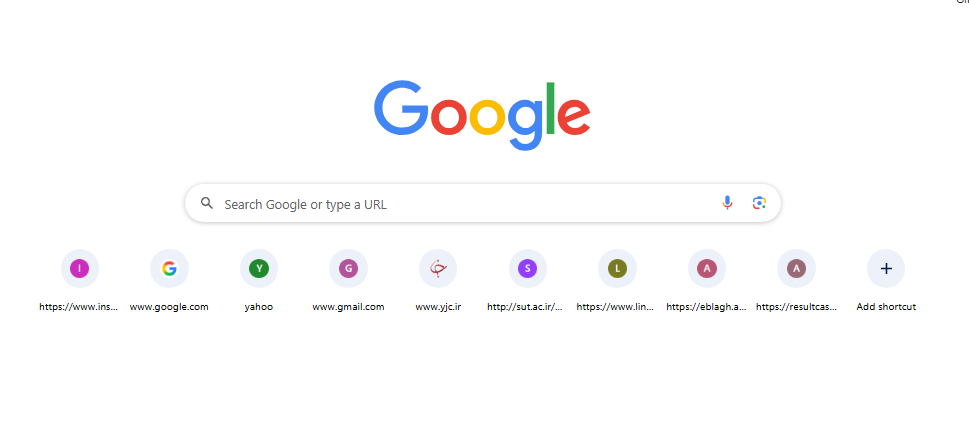

- و
- آموزش UART
- آموزش PWM
- آموزش ADC
- HTML
- CSS
- JavaScript
- پروژه نهایی
- UART
- PWM
- ADC
- HTML
- CSS
- JavaScript
- آموزش GPIO
- آموزش UART
- آموزش PWM
- آموزش ADC
- آموزش Timer
- آموزش I2C
- آموزش SPI
- HTML
- CSS
- JavaScript
- Bootstrap
- Git & GitHub
- ساخت پروژه واقعی
- ) آشنا میشویم و سایت را کاربردیتر میکنیم.
ممنون میشم یک جا کد رو اوسم بذاری
حتماً. اتفاقاً این روش برای یادگیری بهتر است. از این به بعد سعی میکنم کدها را به صورت یکجا، مرتب و قابل کپی قرار بدهم و بعد از آن خطبهخط توضیح بدهم.
مثلاً کد کامل جلسه امروز به این صورت است:
STM32 Academy
به سایت آموزشی STM32 خوش آمدید.
در این سایت آموزشهای STM32 به صورت پروژهمحور ارائه میشود.
موضوعات آموزشی
UART
PWM
ADC
قیمت دوره: 500 هزار تومان
رایگان
تمام آموزشها همراه با پروژه عملی هستند.
سپس با هم خطبهخط بررسی میکنیم مثلاً: توضیح: به مرورگر میگوید این فایل از نوع HTML5 است. توضیح: lang="fa" یعنی زبان صفحه فارسی است. dir="rtl" یعنی متن از راست به چپ نمایش داده شود. و همینطور تا آخر فایل. روشی که از جلسه بعد در پیش میگیریم هر جلسه دقیقاً به این شکل خواهد بود: 📖 آموزش مفهوم 💻 کد کامل (یکجا) 🔍 توضیح خطبهخط 🧪 تمرین 🚀 پروژه کوچک 🎯 نکات حرفهای به این ترتیب هم میتوانی کد را مستقیم در VS Code کپی کنی، هم کاملاً متوجه شوی هر خط چه کاری انجام میدهد. فکر میکنم این روش برای یادگیری تو مناسبتر باشد، چون قبلاً هم در آموزشهای STM32 دوست داشتی کد را خطبهخط بررسی کنیم. از جلسه بعد نیز همین سبک را ادامه میدهیم. 🌹 عالی بود بریم جلسه بعد عالی! 🌹 خوشحالم که این روش آموزش را دوست داشتی. از این به بعد آموزش را دقیقاً مثل یک دوره آموزشی دانشگاهی پیش میبریم؛ یعنی هر جلسه یک موضوع، یک پروژه، تمرین و توضیح خطبهخط. دوره HTML - جلسه ۳ لینکها (Links)، تصاویر (Images) و لیستها (Lists) این سه مورد تقریباً در تمام سایتها استفاده میشوند. کد کامل جلسهSTM32 Academy
منوی سایت
خانهدرباره ما
تماس با ما
لوگوی سایت

دورههای آموزشی
مراحل یادگیری
STM32 Academy
منوی سایت
🏠 خانه📖 درباره ما
📞 تماس با ما
لوگوی سایت
دورههای آموزشی
مسیر یادگیری
لینک GitHub
ورود به GitHubSTM32 Academy اولین مرجع آموزش پروژهمحور STM32
ساختار پوشهها برای اینکه عکس نمایش داده شود، پروژه باید تقریباً به این شکل باشد: STM32-Training │ ├── index.html ├── about.html ├── contact.html │ └── images └── logo.png از جلسه بعد به بعد نیز دقیقاً همین روش را ادامه میدهیم: 📄 ابتدا کد کامل یکجا 🔍 سپس توضیح خطبهخط 💡 نکات حرفهای 🧪 تمرین 🚀 پروژه عملی به نظر من این روش هم برای یادگیری و هم برای نگهداری جزوه خیلی بهتر است. حتی در پایان دوره، این آموزشها به شکل یک کتاب کامل HTML در اختیار خواهی داشت که هر زمان لازم بود بتوانی به آن مراجعه کنی. 🌹